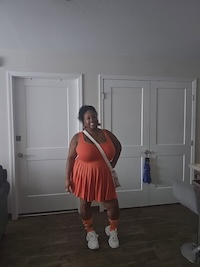

This is me on my way to the Bengals Game.Hi, my name is London Coleman. I'm a current Communication/Applied Media Major here at The University of Cincinnati Blue Ash Campus. I've made the decision to return to college at the age of 35 and I'm now 36. When I graduate I want to become a social media manager or content creator for a company. At the moment I just create content for my own social media platforms. You can view my TikTok page below
My Tik TokWhen i'm not at school or studying I like to spend time with my family. I have a 7 year old son and his name is Prince Theodore. Together we like to bike ride and visit differnt arcades and trampoline parks. I also enjoy going to the gym with my boyfreind. His name is james and he's an up and coming body builder and my personal trainer. If we're not at the gym or hanging out with my son we like to go to the movie theater and go on spontanious dates.
Right now i'm on a weight loss journey. My goal is to get to 205 pounds by december. The reason why I decided to go on a weightloss journey is because I had pre-diebetes, PMOS, and I was unhappy with the way I looked and how my clothes fit. Since I've been on my journey, I've managed to reverse the pre diebectic diagnosses my doctor gave me and I've been able to lessen my PMOS symptoms. The goal is to completely reverse the PMOS and loose the weight so I can look and feel better.
My biggest goal is to graduate college with an associates degree in Communication. When my son is older I plan to return for my bachelors. This semester I'm striving to make hornors and to learn and get involved around campus as much as possible. Returning to college has been one of the best things i've done for myself. I've made many connections and learned so much about my field and myself tghroughout this journey. I'm also doing much better in school now as a mature adult vs when I was a teenager. I've grown so much.